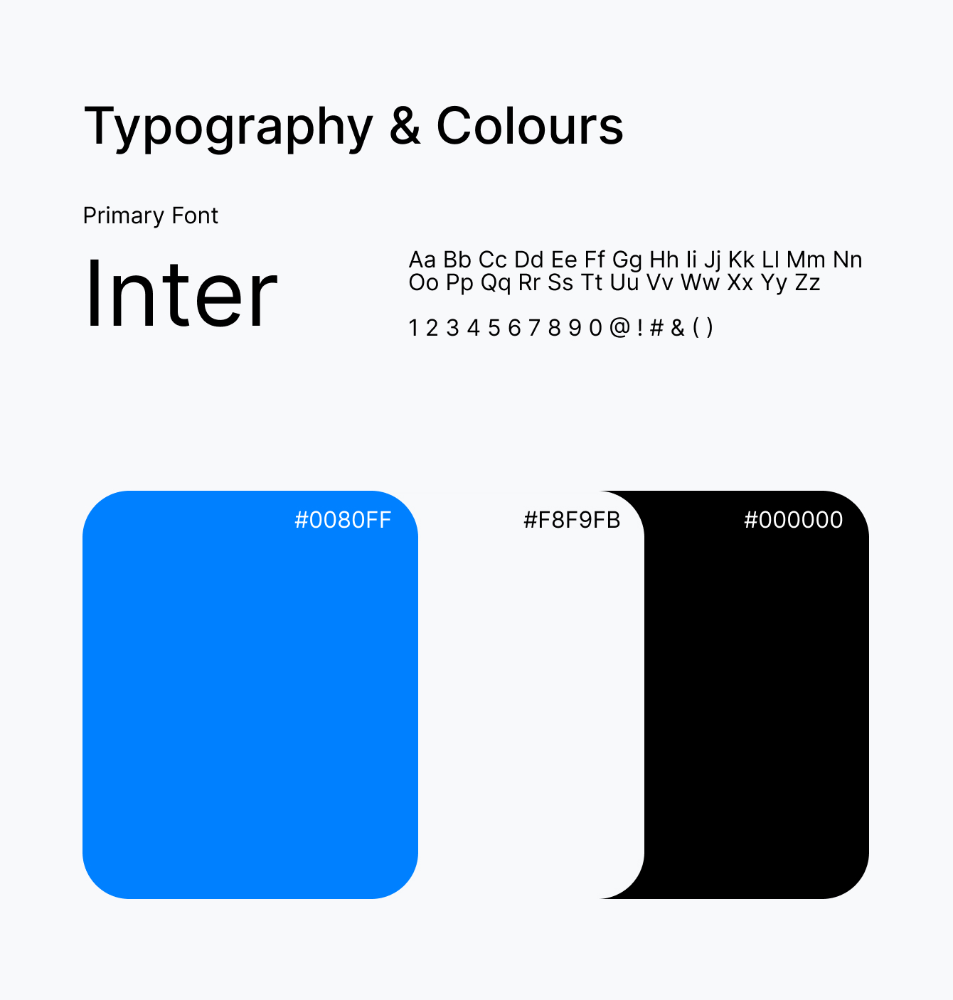
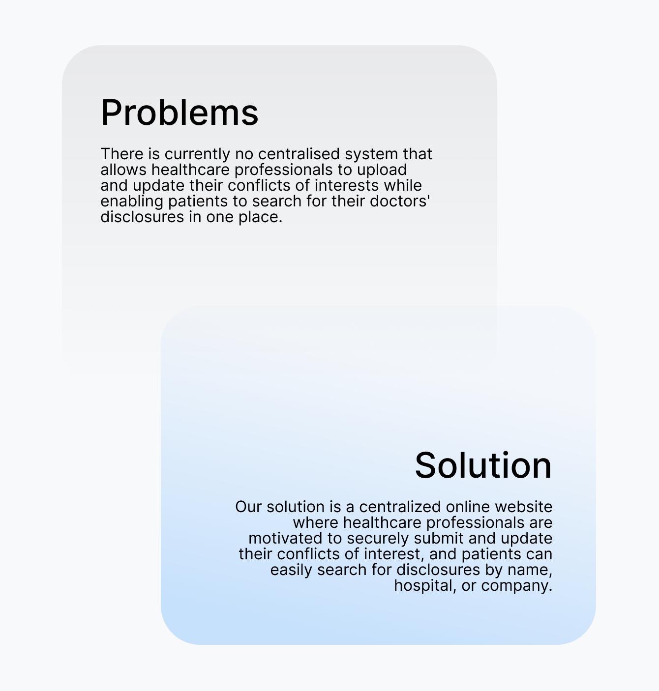
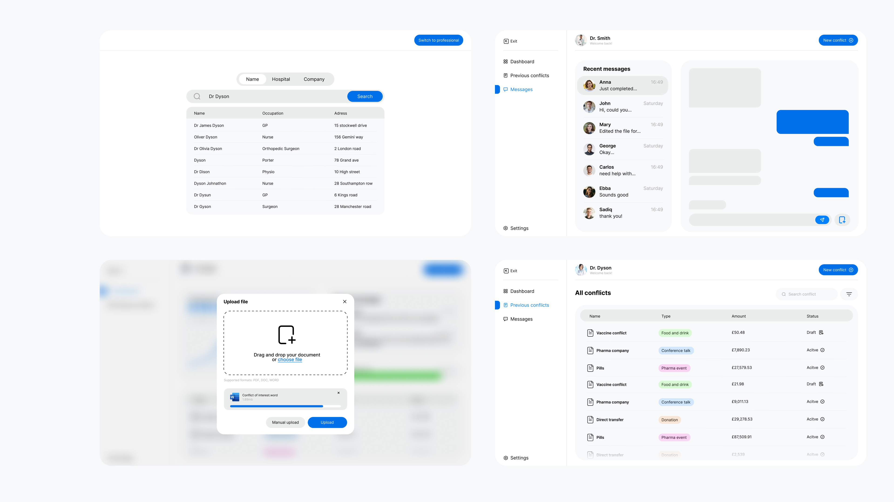

COI
This live project was conducted in collaboration with an NHS practitioner and a researcher at the University of St Andrews. It focused on identifying and addressing challenges faced by both healthcare professionals and patients when submitting or searching for medical conflicts of interest. Through shadowing, interviews, and surveys, we uncovered key pain points and opportunities that informed the creation of a centralised system. This system allows healthcare professionals to easily declare conflicts of interest, while giving patients the transparency and freedom to search for them.
UX
UI Design




